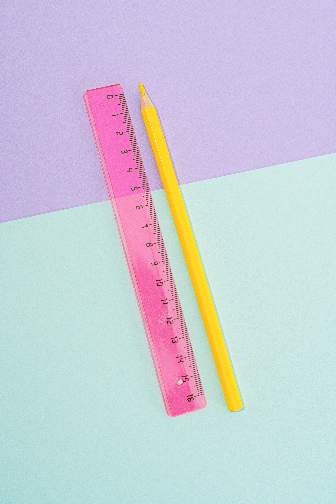
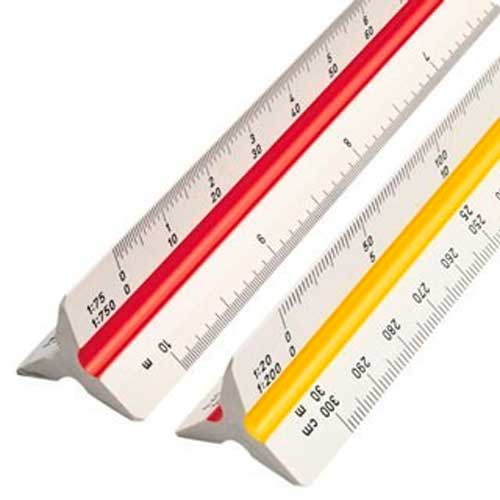

Galeria de Modelos Industriais
As réguas possuem diferentes geometrias e composições de acordo com a precisão exigida pela atividade profissional. Veja abaixo os principais modelos utilizados no mercado:

Régua Escolar AcrílicaLeve, transparente para facilitar a leitura no papel e fabricada via injeção plástica rápida.

Escalímetro TriangularPossui formato de prisma com 6 escalas diferentes. Muito utilizado em projetos de arquitetura e engenharia civil.
 Régua de Aço Inox
Régua de Aço Inox
Ultra resistente a impactos e riscos. Utilizada em oficinas mecânicas e linhas de produção industrial.
 Régua de Madeira FSC
Régua de Madeira FSC
Modelo clássico ecológico, muito valorizado por designers pelo apelo tátil e visual sustentável.